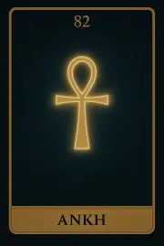
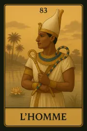
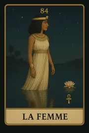
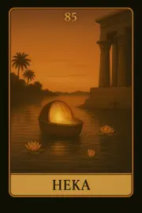

Archétypes – Union et Humanité incarnée
Ces quatre cartes forment une trame sacrée. Ankh, L’Homme, La Femme et Heka incarnent l’union des forces fondamentales : vie et mort, masculin et féminin, matière et esprit. Ils ne sont pas rattachés à une famille numérologique, mais agissent comme piliers symboliques, porteurs d’un équilibre profond et d’un enseignement universel.
Carte 82 – Ankh
Mots-clés : Protection, la clé de la vie, le souffle vital et la connexion sacrée.
Numérologie : Protection, la clé de la vie, le souffle vital et la connexion sacrée.
Planète principale : Aucune (Symbole divin ancien)
Divinité principale : Aucune
Planète secondaire : Aucune
Divinité secondaire : Aucune
Interprétation de la carte 82 : Ankh (droite)
1. Caractère de la personne
La carte Ankh représente une personne qui est en connexion profonde avec la vie et la mort. Elle incarne un être capable de comprendre les mécanismes universels de l’équilibre entre les forces opposées. Cette carte symbolise l’union des opposés, la capacité à intégrer les cycles de la vie, tout en étant profondément spirituellement évolué. L’individu qui tire cette carte est souvent un guide, un enseignant spirituel ou une personne porteuse de sagesse ancestrale, capable de voir au-delà des illusions de la vie physique et de saisir la vérité éternelle.
2. Plan affectif
Dans le domaine affectif, Ankh évoque une connexion profonde avec l’autre qui dépasse le temps et l’espace. Cette carte symbolise des relations qui transcendent les limites physiques ou temporelles, et qui sont fondées sur un amour universel et éternel. Elle peut aussi représenter des relations karmiques, où deux âmes sont liées à un niveau profond, et qui transcendent les conflits terrestres. Elle indique également la réconciliation entre des forces opposées, l’harmonie retrouvée au sein des relations personnelles.
3. Plan matériel
Sur le plan matériel, Ankh représente la pérennité. Cette carte symbolise des investissements ou des projets à long terme, ceux qui ont une durabilité et sont en harmonie avec l'univers. Elle indique également un renouveau matériel, une opportunité de bâtir quelque chose de solide et de durable, de créer des fondations solides qui dureront au-delà des cycles de vie. Il peut aussi s’agir d’un investissement dans un projet spirituel ou philosophique, qui dépasse la simple quête matérielle.
4. Plan professionnel
Professionnellement, Ankh symbolise l’évolution spirituelle dans un contexte de carrière. Cela peut être un projet ou un rôle qui se centre sur le service à autrui et qui s’inscrit dans un but plus élevé. Cela peut aussi représenter des moments où la personne choisit un chemin spirituel dans sa carrière, où elle combine ses capacités matérielles avec un but spirituel supérieur. C’est la carte du travail divin, de l’accomplissement spirituel dans le monde matériel.
5. Plan spirituel
Ankh est une carte profondément spirituelle, représentant l’immortalité de l’âme et l’unité de la vie et de la mort. Elle symbolise un passage spirituel profond, une connexion avec l’essence divine qui transcende la mort physique. C’est une carte qui apporte l’illumination spirituelle, la compréhension des cycles de vie et de mort, et qui montre que la vie continue après la mort dans une autre forme. Elle invite à vivre la vie avec une vision spirituelle profonde et une conscience de l’éternité.
Carte 82 : Ankh (inversée)
En position inversée, Ankh symbolise un déséquilibre spirituel ou une rupture du cycle naturel. Cela peut signifier une perte de connexion avec l'éternité ou un sentiment de séparation de la source divine. L'inversion indique un manque de compréhension des cycles de la vie, une personne peut être trop centrée sur les aspects matériels et avoir oublié le côté spirituel de l’existence. Cette carte inversée invite à réexaminer sa relation avec la vie et la mort, à se reconnecter spirituellement et à chercher un équilibre intérieur.
Carte 83 – L'homme
Mots-clés : : Force intérieure, Action, Responsabilité, Choix, Maîtrise de soi
Numérologie :
Planète principale : Aucune
Divinité principale : Aucune
Planète secondaire : Aucune
Divinité secondaire : Aucune
Interprétation de la carte 83 : L'homme (droite)
Interprétation de la carte 83 : L'Homme
L'Homme représente une personne ayant un impact majeur sur la situation en question. Elle peut désigner le consultant lui-même ou une personne tierce, selon le contexte du tirage. C’est une carte de force intérieure, de décision et de maîtrise de soi. Elle évoque l’action, le pouvoir personnel et les choix que l’on doit faire pour avancer dans la vie. Cette carte montre un individu qui doit prendre ses responsabilités, agir avec intégrité, et maîtriser ses émotions et ses pensées.
1. Caractère de la personne
Cette carte symbolise une personne forte, déterminée et capable de prendre des décisions difficiles. Elle reflète quelqu’un qui possède une grande maîtrise de soi et force intérieure, mais qui peut aussi représenter une personne dans la vie du consultant qui influence fortement sa trajectoire. En fonction de l'interprétation du tirage, cela peut signifier une personne qui joue un rôle clé, soit dans l’action du consultant, soit en tant qu'influence extérieure. Cela pourrait également être une personne qui a des choix difficiles à faire ou qui exerce un rôle de leader dans un contexte donné.
2. Plan affectif
Dans les relations personnelles, la carte L'Homme symbolise une figure de solidité et de leadership. Cela peut indiquer une relation où l’un des partenaires doit prendre un rôle fort ou être plus décisif. Si le consultant est une personne de ce type, la carte reflète une relation où il doit assumer une responsabilité plus importante ou faire preuve de maturité émotionnelle. En cas de personne tierce, cela peut être un conseil de bien comprendre cette personne et de voir si ses choix et actions influencent de manière positive ou négative la dynamique relationnelle.
3. Plan matériel
Sur le plan matériel, L’Homme symbolise la prise en main concrète de sa réalité. Elle évoque une période où le consultant doit affirmer son autorité dans la gestion de ses biens, de son foyer ou de ses projets matériels. Cela peut aussi désigner une stabilité à construire par l’action directe, l’organisation et la responsabilité. Cette carte suggère que la réussite matérielle dépend d’une posture active, mature, et d’un engagement clair dans les choix à faire.
4. Plan professionnel
Professionnellement, L'Homme évoque un chef, un leader, une personne influente dans le milieu de travail du consultant. Elle indique un moment où le consultant doit prendre en charge une situation professionnelle, ou qu’une personne tierce exerce une forte influence dans sa carrière. Cela peut aussi signifier que le consultant doit assumer un rôle de responsabilité ou faire face à un choix crucial dans sa vie professionnelle. La carte met l’accent sur l’action et la décision, suggérant qu’il est temps de prendre des mesures concrètes.
5. Plan spirituel
Sur le plan spirituel, L'Homme symbolise l’appel à la maîtrise de soi et à l’auto-discipline dans la recherche spirituelle. Cela indique que la personne doit faire face à ses responsabilités spirituelles et agir avec courage pour surmonter ses défis. Elle évoque aussi une période où l'individu doit reconnaître son pouvoir intérieur, sa force personnelle, et prendre la décision de suivre son chemin spirituel, de manière authentique et responsable.
Carte 83 : L'homme (inversée)
En position inversée, L'Homme indique une perte de pouvoir personnel ou un manque de direction. Cela peut symboliser une personne qui n’arrive pas à prendre des décisions, manque de leadership ou d’engagement. Cela peut également être une carte indiquant une influence négative d’une personne tierce qui ne prend pas ses responsabilités ou qui exerce une pression indue sur le consultant. L'inversion de la carte suggère que la situation demande de retrouver la maîtrise de soi, de prendre des décisions claires et de réfléchir à la manière de sortir de l'impasse.
1. Caractère de la personne
En position inversée, L'Homme peut représenter une personne faible ou influente de manière négative dans la vie du consultant. Elle pourrait être quelqu’un qui manque d'intégrité, ou qui ne prend pas ses responsabilités. Cela peut aussi être un individu qui n’assume pas ses actions ou fuit la confrontation. Cette carte inversée indique la nécessité pour le consultant de reprendre le contrôle et de réévaluer ses choix pour sortir de la confusion.
2. Plan affectif
Sur le plan affectif, l’inversion de cette carte peut signifier un déséquilibre relationnel, où une personne (soi-même ou un tiers) ne prend pas assez de responsabilité dans la relation. Cela peut signifier qu'une relation de pouvoir est déséquilibrée, ou que l'un des partenaires a perdu son autorité dans la relation. En cas d’influence extérieure, cela peut indiquer qu’une personne exerce un contrôle trop important, ou au contraire qu’elle est passive et indécise, ce qui crée des tensions et des conflits.
3. Plan matériel
En position inversée, cette carte indique un déséquilibre dans la gestion matérielle ou une incapacité à structurer sa réalité concrète. Cela peut signifier des dépenses incontrôlées, un manque de rigueur dans la gestion des affaires ou une tendance à fuir les responsabilités financières. Elle peut aussi symboliser une dépendance matérielle à une autre personne ou une difficulté à assumer ses engagements matériels. C’est un appel à reprendre le contrôle avec pragmatisme et intégrité.
4. Plan professionnel
Professionnellement, L'Homme inversé symbolise une perte de direction professionnelle. Cela peut être un moment où le consultant se sent désorienté dans sa carrière, incapable de prendre des décisions concrètes ou de prendre en main un projet important. Cela pourrait aussi signifier que la personne influente dans la situation professionnelle du consultant est désorganisée ou inefficace, ce qui bloque les progrès dans ce domaine.
5. Plan spirituel
Spirituellement, L'Homme inversé indique une perte de pouvoir spirituel, une décision non prise ou une résistance à l’éveil spirituel. Il peut symboliser un moment où la personne refuse de prendre ses responsabilités spirituelles ou ne parvient pas à agir avec intégrité dans sa quête spirituelle. Cette carte invite à se recentrer, à retrouver son pouvoir intérieur et à prendre des mesures concrètes pour avancer sur le chemin spirituel.
Résumé de la carte 83 : L'homme
La carte L'Homme est une carte d’action et de responsabilité. Elle incarne l’idée que la personne doit prendre les rênes de sa vie, assumer ses choix et agir avec détermination. C’est aussi une carte de maîtrise de soi et de leadership, qu’il s’agisse du consultant lui-même ou d’une personne influente dans la situation. En position inversée, elle symbolise un déséquilibre ou un manque de direction, invitant à reprendre le contrôle et à prendre des décisions importantes pour rétablir l’équilibre.
Carte 84 – La femme
Mots-clés : : Origine, Fin de cycle, Transmission, Maternité, Passage, Création, Sagesse incarnée, Fécondité spirituelle, Vie et mort réunies
Numérologie : Clôture d’un cycle, Passage de l’état de fille à mère, Naissance de l’essence, Transformation ultime, Potentiel du renouveau
Planète principale : Aucune
Divinité principale : Aucune
Planète secondaire : Aucune
Divinité secondaire : Aucune
Interprétation de la carte 84 : La femme (droite)
1. Caractère de la personne
La carte La Femme représente l’archétype féminin sous toutes ses formes, du cycle de la vie à la transformation personnelle. Elle incarne les phases naturelles de la vie, la transformation de la fille en mère, et le passage de l’innocence à la sagesse. Cette carte met en lumière une personne créative, intuitive et réceptive, dotée d’une profonde capacité à créer, que ce soit dans les relations, dans sa carrière, ou même dans son propre processus spirituel. C’est une personne qui peut traverser des périodes de transformation profonde, et créer de la vie dans tous les aspects de son existence.
2. Plan affectif
Sur le plan affectif, La Femme évoque l’aspect nourrissant et créateur d’une relation. Elle symbolise la capacité à donner de l’amour inconditionnel, à prendre soin de l’autre et à soutenir. Elle incarne le passage de la fille à la mère, de la jeune femme à la matriarche. Cette carte pourrait aussi indiquer une nouvelle naissance affective, comme une reconstruction d’une relation ou la création d'une nouvelle dynamique familiale. Elle invite à embrasser les cycles de la vie et à donner naissance à une forme de relation plus équilibrée et nourrissante.
3. Plan matériel
Dans le domaine matériel, La Femme symbolise la création et la protection des projets. Elle est la créatrice de son monde matériel, apportant abondance et harmonie dans son environnement. Elle incarne le pouvoir de nourrir et de développer des idées, des projets, ou des entreprises, et les amener à la vie. Cette carte parle également de la capacité à soutenir ses proches et à bâtir des fondations solides, créant un environnement stable et nourrissant. Elle est une gardienne de l’abondance matérielle et affective.
4. Plan professionnel
Professionnellement, La Femme incarne une énergie créatrice et nourrissante dans son travail. Cela peut faire référence à des métiers liés à la création, à l'éducation, à la santé ou à l’accompagnement des autres. Elle peut aussi symboliser la réussite dans un domaine lié à des valeurs humaines ou une activité nourrissante pour la société. Il est possible que la personne représentée par cette carte soit en phase de création d’un projet ou d’une entreprise, et qu’elle soit en train de donner vie à une vision qui va se manifester concrètement.
5. Plan spirituel
Spirituellement, La Femme représente la création divine, la nativité spirituelle et la transformation intérieure. Elle incarne le passage de l'innocence à la sagesse, un chemin de renaissance spirituelle. Elle nous rappelle que tout est cycle, et que tout ce qui doit naître doit d'abord mourir. Elle symbolise le renouveau spirituel, la création de soi-même à travers les épreuves et les expériences. Elle est aussi un archétype de l'intuition et de la réceptivité spirituelle, invitant à se connecter à l’intuition divine, à reconnaître la sagesse intérieure et à laisser fleurir ses talents spirituels.
Carte 84 : La femme (inversée)
En position inversée, La Femme peut représenter un déséquilibre dans l’expression féminine ou un manque de réceptivité. Cela peut signifier que la personne se trouve bloquée dans un ancien rôle, ou qu'elle refuse d’accepter ses propres transformations ou la création de nouvelles relations. Elle peut aussi symboliser une perte de contact avec l’intuition ou une incapacité à écouter sa voix intérieure.
1. Caractère de la personne
La Femme inversée peut indiquer une personne qui se ferme à son intuition et qui refuse de s’engager dans son processus créatif. Elle peut représenter une personne en manque de confiance dans ses capacités à se transformer, ou qui rejette les cycles naturels de la vie. Cela peut être une personne qui refuse de se connecter à ses émotions, ou qui vit dans un état de négation des énergies féminines essentielles.
2. Plan affectif
En position inversée, cette carte peut symboliser une relation où l’un des partenaires ne prend pas soin de l’autre, où il y a un déséquilibre émotionnel ou une absence de réceptivité. Il peut s’agir d’une relation où l’amour est réprimé, où l’on ne parvient pas à créer une harmonie nourrissante. Cela peut aussi indiquer un manque de développement affectif, une relation bloquée ou stagnante, ou encore un déséquilibre dans les rôles affectifs.
3. Plan matériel
Professionnellement et matériellement, La Femme inversée peut indiquer une situation où les projets ou idées créatives ne prennent pas forme. Il peut s'agir d'un manque de soutien ou de protection dans le domaine matériel, où les efforts sont enlisés ou infructueux. Cette inversion pourrait aussi signifier qu'il est temps de lâcher prise sur un projet ou un aspect matériel de la vie qui n’évolue plus, afin de créer de la place pour quelque chose de nouveau.
4. Plan professionnel
En position inversée, La Femme peut indiquer un blocage créatif, une difficulté à faire aboutir un projet ou un épuisement lié à une surcharge émotionnelle dans le travail. Cela peut refléter un désalignement entre les valeurs profondes de la personne et ce qu’elle vit professionnellement : elle donne trop sans recevoir, ou elle s’oublie au profit des autres. Elle peut aussi signaler une difficulté à se faire entendre ou à faire valoir son potentiel dans un environnement de travail peu réceptif. Il est temps de se recentrer et de recréer un espace où l’intuition et la créativité peuvent s’exprimer à nouveau.
5. Plan spirituel
Spirituellement, La Femme inversée peut représenter une perte de connexion spirituelle. Cela peut indiquer un désalignement spirituel ou un refus de transformation. Il est possible que la personne ne sente plus de lien avec son intuition spirituelle, qu’elle soit déconnectée de ses émotions ou qu’elle refuse de suivre son chemin spirituel naturel. C’est une invitation à se réaligner spirituellement et à rétablir la connexion avec soi-même.
Résumé de la carte 84 : La femme
La carte La Femme représente l'intuition, la création, la nativité et la transformation spirituelle. Elle symbolise le passage naturel entre la fille et la mère, le renouveau spirituel et l’évolution constante. En position inversée, elle signale un déséquilibre dans l’expression féminine, la réceptivité et la création, suggérant un blocage intérieur qui empêche la personne de se connecter à sa véritable essence spirituelle et de manifester ses désirs.
Carte 85 – Heka
Mots-clés : : Naissance, création pure, innocence, potentialité, émergence, enfance sacrée
Numérologie : Vibration hors cycle : HEKA n’est pas issu d’une famille. Il est le fruit de l’union des polarités (Homme / Femme) et du souffle vital (Ankh).
Planète principale : Aucune
Divinité principale : Aucune
Planète secondaire : Aucune
Divinité secondaire : Aucune
Interprétation de la carte 85 : Heka (droite)
1. Caractère de la personne
La carte HEKA représente une personne en gestation intérieure, porteuse d’un potentiel encore en formation. Elle est en lien avec une dimension enfantine, intuitive, émergente. Son énergie est fraîche, sensible, parfois fragile. Elle incarne l’élan du nouveau, sans cadre figé. C’est quelqu’un qui ne sait pas encore pleinement qui il est, mais qui vibre déjà avec sincérité.
2. Plan affectif
HEKA peut symboliser une naissance réelle (enfant à venir) ou symbolique (relation nouvelle, élan amoureux pur). Il peut également désigner un amour émergent, encore timide, qui n’a pas encore trouvé sa forme. C’est l’amour dans son innocence, dans sa beauté brute, sans attentes. Il appelle à aimer sans vouloir contrôler.
3. Plan matériel
Dans le domaine matériel, HEKA indique le début d’un projet, une graine d’idée, ou un appel à la nouveauté. Ce n’est pas encore stabilisé, mais c’est vivant. C’est le moment de préparer le terrain, sans précipitation. L’intuition est à suivre. Les bases ne sont pas encore visibles, mais le germe est là.
4. Plan professionnel
Professionnellement, HEKA peut signaler un tournant, une envie de créer autrement, ou l’arrivée d’une nouvelle vocation. Il représente une posture d’apprenant, ou un besoin de réinventer sa manière de travailler. C’est aussi un appel à la spontanéité, à l’émerveillement dans la création quotidienne.
5. Plan spirituel
Spirituellement, HEKA est une carte de renaissance douce. Il symbolise le retour à l’essence, à l’innocence originelle, ou l’entrée dans un nouveau cycle d’élévation. Il invite à ne rien figer, à observer ce qui naît, à accueillir l’élan sacré sans vouloir le contrôler.
Carte 85 : Heka (inversée)
1. Caractère de la personne
En position inversée, HEKA représente une personnalité qui refuse de grandir, ou qui nie la part enfantine en elle. Cela peut signifier une immaturité affective, ou un déni de son propre potentiel. La personne ne s’autorise pas à naître à elle-même.
2. Plan affectif
Sur le plan affectif, HEKA inversé signale une blessure d’enfance non cicatrisée, qui affecte la manière d’aimer. Cela peut aussi désigner une relation dans laquelle une personne attend d’être “portée” ou “sauvée”, plutôt que d’entrer dans une dynamique adulte. Le lien est fragilisé par des attentes irréalistes ou une dépendance inconsciente.
3. Plan matériel
Matériellement, HEKA inversé indique un blocage dans la créativité ou une incapacité à faire émerger quelque chose de nouveau. La peur d’échouer ou de ne pas être prêt freine l’action. Cela peut aussi désigner une phase de stagnation intérieure, où les idées restent à l’état latent.
4. Plan professionnel
Dans le domaine professionnel, cette carte inversée peut montrer un refus de sortir d’un cadre sécurisant, ou une peur d’exprimer pleinement sa créativité. La personne peut se sentir paralysée, ou penser qu’elle n’a “rien à proposer”. C’est un appel à la confiance et à l’expression libre de soi.
5. Plan spirituel
Spirituellement, HEKA inversé évoque une coupure d’avec sa nature divine originelle. L’enfant intérieur est étouffé. Cela peut représenter une perte de sens, une incapacité à s’émerveiller, ou un rejet de toute forme de foi spontanée. Cette carte invite à reconnecter avec la lumière première, à lâcher les couches mentales qui enferment.
Résumé de la carte 85 : Heka
HEKA est la carte de l’Enfant sacré, de la création vivante, du potentiel pur. Elle ne parle pas de ce qui est accompli, mais de ce qui est en train de naître. C’est la vibration du début, de la graine, de l’innocence active. Elle invite à accueillir sans contrôler, à créer sans peur, à aimer sans mesure. Inversée, elle montre ce qui empêche cette naissance : peurs, immaturité, blessures non reconnues. Mais toujours, même inversée, HEKA murmure une vérité : "Ce que tu portes est prêt à naître."